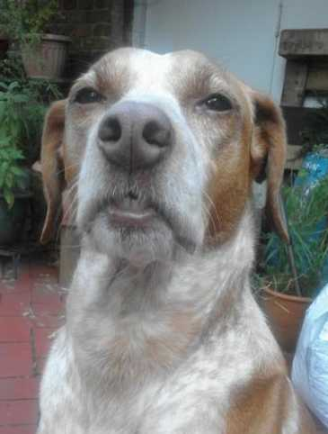

LOUBA

Goede middag
Ik ben gisteren middag bij jullie geweest en heb het droeve nieuws meegedeeld dat ik Loubatje spijtig genoeg heb moeten laten inslapen maandag 9/12 Ik heb haar bij jullie komen halen op 27/2/17 en heb nog een aantal jaar haar leven mogen delen en hoop dat ze bij mij toch nog een goede thuis heeft gehad Ze blijft in elk geval een speciaal plaatsje in mijn hart hebben